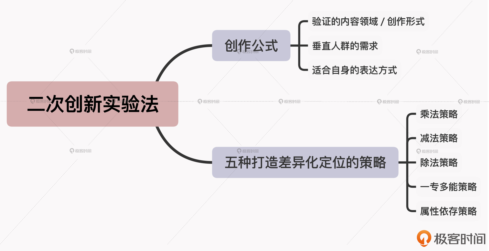

- 00 开篇词 短视频时代下，怎么把握好变现风口？.md
- 01 爆款短视频的底层逻辑：用心拍的短视频为啥没人看？.md
- 02 爆款短视频的底层逻辑：如何轻松打造自我特色？.md
- 03 精益创业法：如何快速跨过从0到1这道坎？.md
- 04 SWOT法：这么明显的个人优势你为啥就是看不到？.md
- 05 效用函数法：如何用量化的方式进行高效创作？.md
- 06 二次创新实验法：如何打造个人的差异化定位？.md
- 07 平台定位：如何选择最适合自己的创作平台？.md
- 08 如何快速找到各大短视频平台的正确切入点？.md
- 09 选题（上）：如何利用思考清单找到合适选题？.md
- 10 选题（下）：如何为不同的内容定制合适选题？.md
- 11 优劣分析法：如何快速筛选适合创作的视频素材？.md
- 12 标题（上）：如何利用微创新巧妙找到爆款标题？.md
- 13 标题（下）：如何用对号入座的方式抓住标题亮点？.md
- 14 视频封面（上）：如何快速抓住用户注意力？.md
- 15 视频封面（下）：如何传递最有价值的信息？.md
- 16 视频剪辑：如何轻松掌握视频化剪辑的三大公式？.md
- 17 效果反馈法：剪辑很容易，为什么你却一直学不会？.md
- 18 剪辑对比（上）：如何避开常见的短视频剪辑陷阱？.md
- 19 剪辑对比（下）：如何利用剪辑技巧提升视频质量？.md
- 20 拉片法：用电影创作的方式学习爆款短视频运营技巧.md
- 21 用户留存率：为什么粉丝很多但忠实拥趸却很少？.md
- 22 点赞率（上）：如何有效提升短视频的点赞量？.md
- 23 点赞率（下）：三种方法轻松提升用户对内容的认可度.md
- 24 上瘾机制：为什么视频观看量很高却没人留言？.md
- 25 避坑指南：为什么很多短视频账号中途做不下去了？.md
- 26 如何找到适合自己的短视频变现模式？.md
- 27 多元化变现：如何明确不同创作阶段的变现任务？.md
- 28 多内容变现：不同内容的主打变现模式是什么？.md
- 结束语 一切成大事者，都是终身学习者.md
06 二次创新实验法：如何打造个人的差异化定位？
你好，我是周维。这节课，我们来聊聊差异化定位的问题。
在短视频创作中，打造差异化定位是非常重要的，因为有了差异，用户才能记住自己。也因为有了差异，我们才能够塑造个人IP，在一个垂类领域中具备商业价值。
我想这一点你应该也非常清楚。但是在实际情况中，大部分创作者其实一开始都不知道要如何下手，打造出自己内容上的差异化，因为他们缺乏对差异化定位的正确认知。
举个简单的例子，或许你也遇到过这样的问题：老张是一个川菜大厨，经验丰富，想做类似川菜美食教程的短视频内容，最终达成变现的目的。不过，等他真正开始着手创作的时候，发现已经有很多制作川菜教程的短视频账号了，那要怎么才能凸显自己内容的与众不同呢？
老张想，要不就不做教程，把一道川菜从筹备到制作完成的过程展示出来吧，这个形式应该就能体现出跟其他美食教程创作者的区别了。这样，老张就开始了创作之路，可是虽然一路摸索，最后还是没有吸引多少用户的关注，反而还浪费了很多时间和金钱成本。
所以，老张的问题出在哪呢？其实就是因为他对于差异化的认知不够准确，只是想当然地换了一种内容形式，但本质上还是没有跟其他创作者拉开差距，达成独树一帜、标新立异的目的。
要知道，真正的差异化并不是简单的一句话总结，而是要通过具体的步骤去选择、去实施得来的。所以这节课，我就带你来学习下，如何利用二次创新实验法来打造个人差异化定位的手段。
什么是二次创新实验法？
首先我要打破一个误区，那就是二次创新绝对不等于颠覆所有。
因为创新从来不是天马行空的发散思维，而是一种在框架内思考、解决问题的能力。只有“在框架内思考、解决问题”，即不脱离事物/问题本身去发散思维，而是根据事物/问题自身进行延伸思考或二次创新，我们才能找到真正的解决方案。
我之前做线下培训直播的时候，有个做母婴知识分享的博主问了我一个问题：自己发布了很多围绕宝妈、儿童健康问题的知识分享视频，但一直无人问津，她觉得问题可能是出在了同质化内容太多的缘故，于是就决定自己创造一种同类领域里都没有的内容类型。她根据自己的想法创作了一些搞笑类的母婴知识短视频，但是效果都不太好（在用户的认知领域中，做母婴类的创作者需要给用户传递价值，但跟搞笑挂钩后，这种效果就会大打折扣），想问到底什么样的母婴内容才算是标新立异的呢？
说实话，虽然这个博主发布的内容没有什么问题，但是她没有找到差异化定位的正确方法，而是陷入到了为了创作内容而创作内容的陷阱中，不管内容制作得多精美，但都不是用户想看的内容，所以她的内容才无法得到更多用户的关注。
所以要想改善目前的状况，我建议她选择这样的差异化定位：母婴领域+健康食谱+剧情演绎。因为通过交谈发现，这个博主除了在从事跟育婴有关的工作之外，也善于制作美食，平时自己也非常喜欢演戏，甚至还参演过一些影视剧小角色。这样的定位之后，虽然她依然还是传递有价值的母婴健康知识，但却与其他母婴内容创作者打出了差异，并且内容或形式上的输出都在自己的掌控之中。
你看，这就是基于框架从自身的角度去寻找解决问题的方法，而这正是二次创新实验法的基本原理。
所谓的二次创新实验法，就是根据已经验证过的内容领域、创作形式，结合垂直人群的多元化需求进行内容的重新组合，以此找到适合自身的创作方式，凸显自己在内容创作上的差异化。
如果用公式表达，就是：
二次创新实验法=验证的内容领域/创作形式+垂直人群的需求+适合自身的表达方式
因此，在短视频创作的初期，我们就可以采用二次创新的方式，将现有的内容元素（比如内容讲述顺序、针对目标用户、表达方式等）进行重新组合，从而创作出独具个人特色的内容，打造自己的差异化定位。
那具体要如何做呢？下面，我就带你来学习五种基于二次创新实验法的差异化定位策略。
五种策略打造个人差异化定位
在开始学习之前，我们需要明确一件事情，就是内容元素的重新组合并不是随意为之的，我们需要把握好主要的侧重点。
我给你举个例子，你一看就明白了。假设我是一个做花卉种植的知识创作者，我将自己的内容表达方式拆分为：花卉+场景问题解答+人物出镜。
前面的花卉代表着我要深耕的内容领域，这个是主打的内容重点，那这个元素我就不可以随意变动了，因为后面的“场景问题解答”和“人物出镜”都是为了更好地服务于花卉这个内容领域。
这样，我们在使用二次创新实验法时，就可以通过变动后面多个内容元素的方式，来形成一种全新的内容模式。下面，我就来具体介绍下五种可实操的内容元素组合策略，帮你轻松找到自己的内容差异化定位。
乘法策略
第一种是乘法策略，也就是先拆分出短视频内容的各个元素，然后围绕其中一个元素进行一次或多次复制，这种在原来基础上以乘法的方式进行的改动，就是内容上的一种创新。
比如，我是历史学专业出身，对各种史学经典如数家珍，想做类似“XX说历史”等等的短视频内容。但是如今在内容细分之下，“说历史”类型的内容创作者已经有很多了，那我该如何打造自己的差异化定位呢？
我们按照乘法策略来分析一下。
首先，我可以拆分下历史知识视频的内容元素：历史事件解读/人物解说——>历史过程分析——>个人总结——>给出启迪。
然后，我可以选择其中一个部分进行复制改造。比如，我会选择历史人物解说，将两个或多个人物作为背景进行串联，讲述人物之间的关系，这要比单纯只讲述一个历史人物有趣很多。
这样，简单地将其中一个元素进行多次复制之后，就变成了我内容差异化定位最显著的地方。
减法策略
第二种是减法策略。
这个策略也非常简单，跟乘法策略的逻辑是相似的，也是先拆分出自己短视频内容的各个元素，然后把其中一个组成部分删除，也可以变成一种新的内容形态。
比如，你现在准备做剧情类型的短视频，主要记录你和女朋友平日里的搞笑生活，那要怎么打出差异化呢？
你可以先分析一下自己内容的组合元素，这里我建议你可以按照自己内容的前后顺序进行简单的整理，假设整个视频的大致内容是这样的：事件开始——>引发误会/猜疑——>导致冲突/矛盾——>剧情反转——>分享感情秘籍。
然后，你可以删除其中一部分，比如事件的开始，上来就是抛出冲突，可以瞬间抓住用户的注意力，吸引他们看下去，悬念性非常强。这种方式，在创作中称之为“热开场”，关于其具体的创作方法，我会在后面的“拉片法”这节课中给你详细讲述。
那么这样，你创作模式就改成了：误会/猜疑——>引发冲突/矛盾——>剧情反转——>感情秘籍。如此一来，减去其中一个部分后，就构成了一种新的内容形态。
但是请注意，你删除的内容组成部分，不应该是核心功能部分，而应该是处于次要位置的组成元素。
那该如何识别呢？我分享你一个方法，等你重新组合之后将内容上传到平台上，如果出现各项数据低迷、用户反馈较差等情况，就表明这是一种错误的减法策略，你就知道应该及时调整这个组合方式了。
除法策略
第三种是除法策略。同样地，我们首先要拆分出自己短视频内容的各个元素，然后选取其中一个元素，将其分解为多个部分，组成一种全新的内容形态。
比如，你特别热爱美食，准备创作美食相关的短视频内容，具体该怎么做呢？
首先，拆分下内容元素：确定用户喜爱的家常菜肴——>采购食材的过程——>详细的制作步骤/流程——>成功作品的展示/食用展示。
然后，你可以将现在已有的元素进行再次分级与组合，比如选择“用户喜爱的家常菜肴”，通过分解，你可以将其变成不同场景、不同用户的饮食需求（如上班族、孕妇、老人、孩子等），甚至还可以变成“朋友聚会时适合吃的美食创作+详细的制作过程”。
这样，当我们将原有的组成部分以更加细分的方式分解之后，就产生了新的内容形态，而这些新的内容形态会更加垂直与细分人群、场景，会更受用户的欢迎。
一专多能策略
第四种是一专多能策略，它是指将拆分后的某一种内容元素与目标用户的需求进行再次组合，形成一种新的内容形态。
比如我是一个三农领域的创作者，平时拍摄的都是自己居住的小山村风土人情与奇闻逸事。那么通过拆分，我得到了自己的内容元素组合是：农村奇闻逸事/小山村风土人情——>展示过程——>得出结果。
现在，我要思考一个问题：这样的创作模式能给用户带来什么？如果一下子想不清楚，不要紧，我们可以先预设下能为用户带来的价值，比如可以满足用户的猎奇心理、获得新认知或是感悟到人情冷暖，等等。
接着，我将刚才拆分的内容元素，与预设可以为带来用户的价值进行组合，就能得到一种新的内容形态，比如说：
- 假如这一期内容正好讲述了大山深处的一种神奇植物，那我的内容组合方式就是：奇闻逸事+猎奇，所以要重点围绕这种神奇植物的“前世今生”具体展开即可，不需要添加其他内容。
- 假如这一期内容是小山村的日常拍摄，那我们的内容组合方式可以是：日常拍摄+人情冷暖，那内容的定位就是要围绕人与人的关系来进行拍摄了。
这样一分析，你是不是对于自己内容的差异化定位就非常清楚了？
属性依存策略
我们再来看看第五种组合策略：属性依存策略。
属性依存策略与一专多能策略有些相像，但是它不一样的地方是在拆分完内容元素后，会将其中的各个部分也对应用户的需求，这样可以让原本没有直接关联的内容元素组合到一起，从而也可以形成一种新的内容形态。
假设，我现在是一个生活类的短视频创作者，我的内容元素组成是：生活场景难题——>解决技巧——>展示满意的结果。
接着，我可以再来分析一下用户在生活中会面临的一些难题，比如说：什么样的手机适合我？晚上容易失眠怎么办？在公开场合我该如何展示自己？
这样，我就可以重新组合一下内容元素与用户的需求，比如，围绕“什么样的手机适合我”这个难题，我可以创作一个手机导购指南视频，从收入、性价比、拍照功能等不同维度来进行分析和点评。
简而言之，属性依存策略就是让原本看似没有直接关系的变量之间，形成内在关联，或者形成一种有针对性、有需求的内容表达形式，从而可以在创作中凸显自己内容的独特之处，以此打造出差异化定位。
小结
二次创新实验法，就是根据已经验证过的内容领域、创作形式，结合垂直人群的多元化需求进行内容的重新组合，以此找到适合自身的创作方式，凸显自己在内容创作上的差异化。基于这个方法，这节课我们学习了五种打造差异化定位的策略，分别是：乘法策略、减法策略、除法策略、一专多能策略、属性依存策略。
在我看来，二次创新实验法的最大优点就是可见、可衡量、可操作，是你在寻找自我内容的差异化定位时，围绕一些可以参考的目标进行再思考的一种过程，它可以让你真正找到自我的优势，当然也会看到自己的不足，但不会让你陷入到茫然失措的纠结中。这里我建议你在学习之后，可以多实际操作一下，从而将其化为你自己知识体系的一部分。

思考题
学习完这节课之后，相信你对于如何寻找自己的差异化定位会有全新的理解。请你结合今天学习的内容，围绕自己的内容领域来进行拆分和组合，看看能否找到适合自己的差异化定位。相信学习之后的实践，可以让你更好地掌握知识点。
欢迎给我留言。如果你觉得有收获，也欢迎把今天的内容分享给更多的朋友。
好了，这节课就到这里，我们下节课再见！
© 2019 - 2023 Liangliang Lee. Powered by gin and hexo-theme-book.